Votre saveur
Rubio, Fusion, Full Black, Kazan ou Josh. Dites-nous si vous la voulez fraîche, douce, fruitée ou intense, et nous vous guidons à table.
Chicha en cristal taillé, charbon naturel et cocktails sans hâte. L'Eixample.
Noor signifie lumière, et cela se ressent. Carreaux cuivrés, canapés faits pour prolonger la nuit, colonnes qui rougeoient comme des braises et un bar où chicha et cocktails parlent la même langue. À deux pas de la Plaza Cánovas.
Pour célébrer, pour une longue conversation ou pour rien de particulier. Ouvert tous les jours, de 16:00 à 04:00.
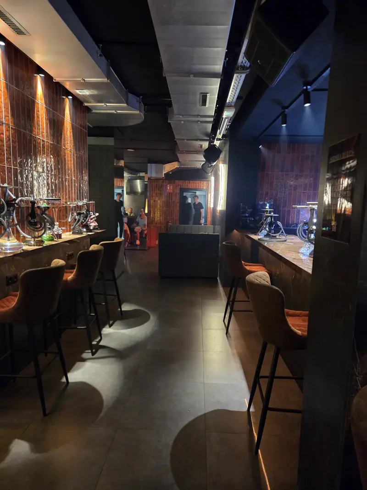
Rubio, Fusion, Full Black, Kazan ou Josh. Dites-nous si vous la voulez fraîche, douce, fruitée ou intense, et nous vous guidons à table.
Foyer garni à la main, charbon naturel à point et cristal impeccable à chaque service.
Un cocktail, de la bonne musique et le bar allumé jusqu'à quatre heures. Le reste, c'est vous qui décidez.
Chichas, cocktails et thés à partager : l'essentiel du NOOR en trois gestes. Demandez conseil à table pour votre saveur.
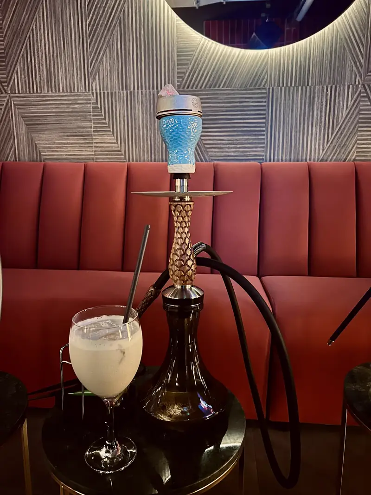
De la Rubio à la Kazan Especial, sans oublier nos créations au fruit frais. Dès 16 €.
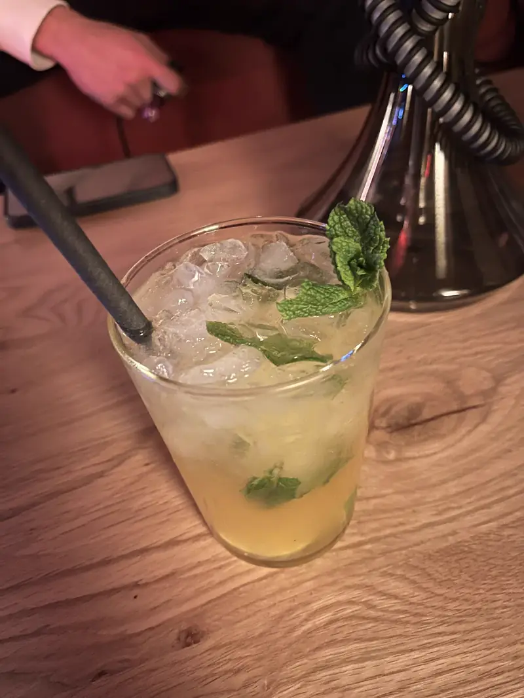
Mojitos à la fraise, à la mangue ou au fruit de la passion, Espresso Martini, PornStar, Negroni. Des classiques bien servis, dès 12 €.
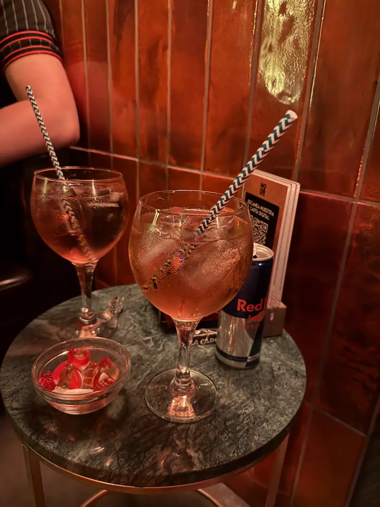
Chai latte et thés à partager ; cava, Veuve Clicquot ou Dom Pérignon quand la nuit le demande. Dès 8 €.
Braise, cristal et cuivre : notre lounge à chicha dans L'Eixample, tel qu'il apparaît passé minuit.
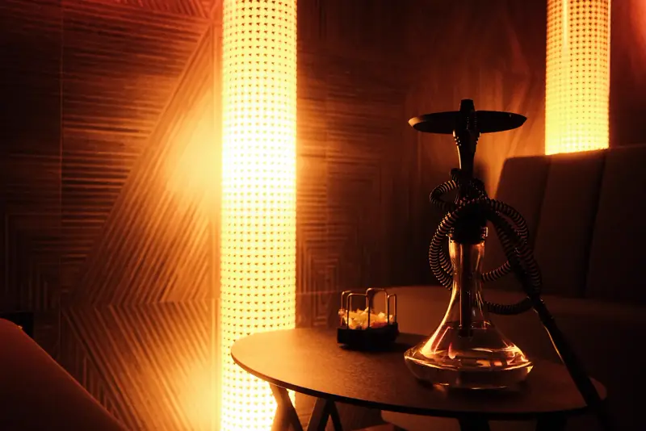
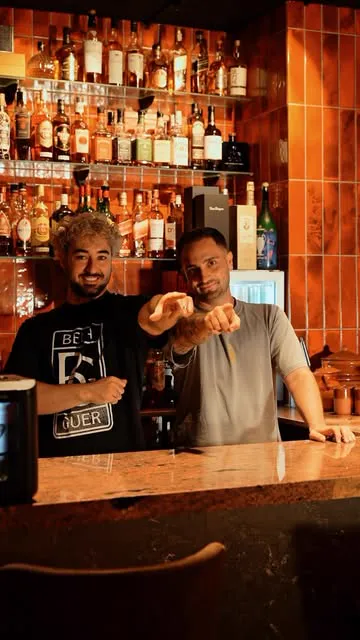
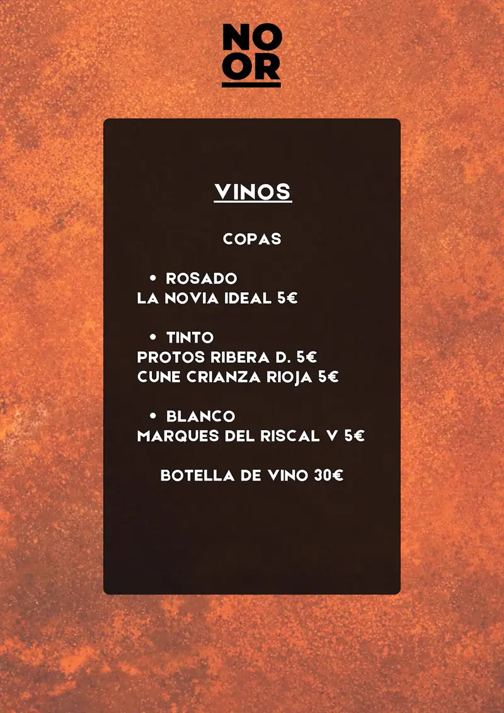
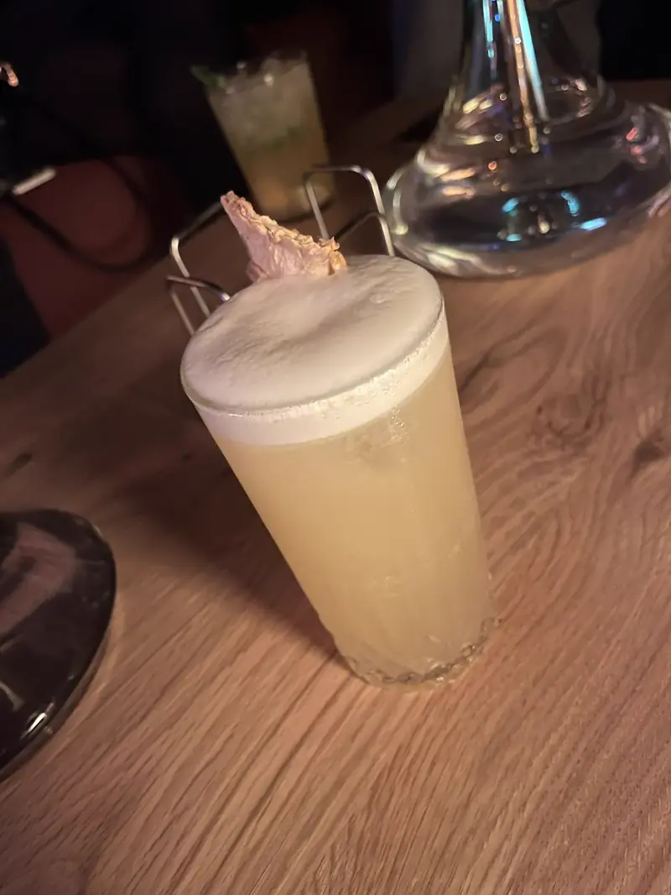
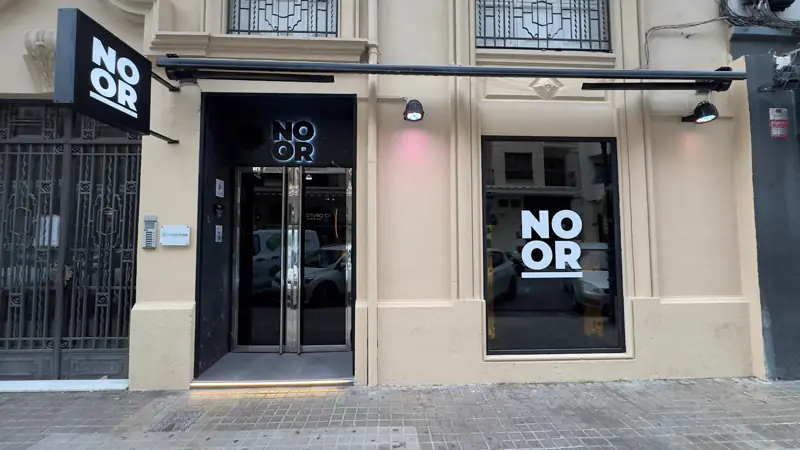
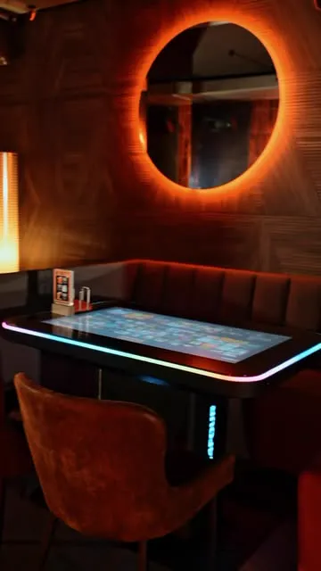
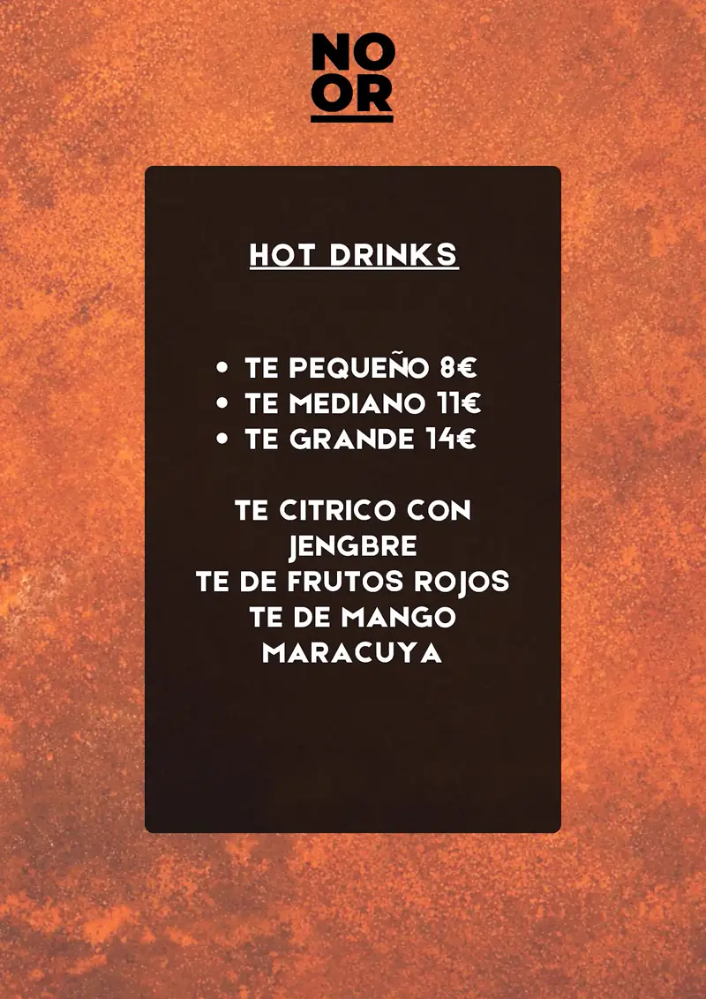
Nous sommes ouverts tous les jours, du lundi au dimanche, de 16:00 à 04:00.
Au Carrer Serrano Morales, 3, L'Eixample, 46004 València, à côté de la Plaza Cánovas.
Les chichas vont de 16 € (Rubio ou Josh) à 30 € (Kazan Especial), et 40 € pour celle au fruit frais.
En ligne sur Scennio (de 1 à 10 personnes), par téléphone au +34 963 12 07 54 ou sur WhatsApp. Pour les grands groupes, WhatsApp est préférable.
Oui : cocktails dès 12 €, avec mojitos à la fraise, à la mangue ou au fruit de la passion, Espresso Martini, PornStar Martini, Negroni et bien d'autres.
Entre 10 et 20 € par personne, selon votre commande.
Au cœur de L'Eixample, à côté de la Plaza Cánovas.
| Du lundi au dimanche | 16:00 – 04:00 |
Réservez votre table en un message. Une question sur la carte ou vous venez en groupe ? Notre assistant vous répond aussitôt.
Nous vous confirmons la table sur WhatsApp. Vous préférez la choisir en ligne ? Réserver sur Scennio.